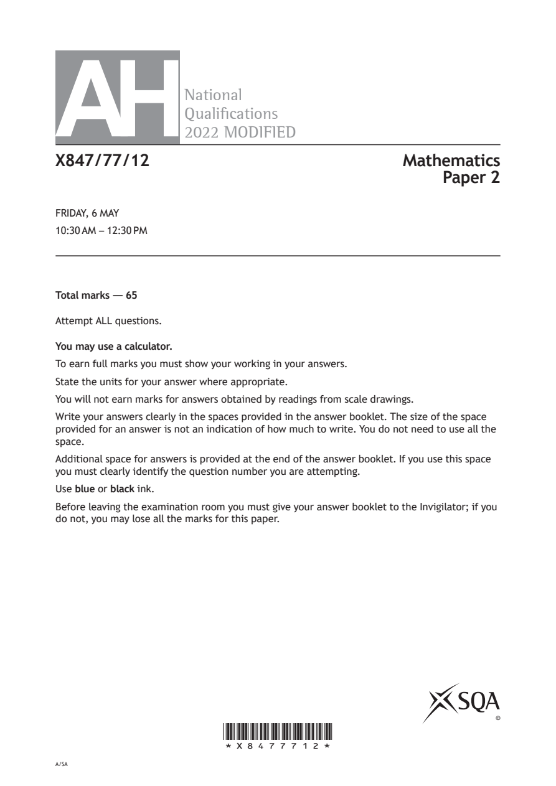
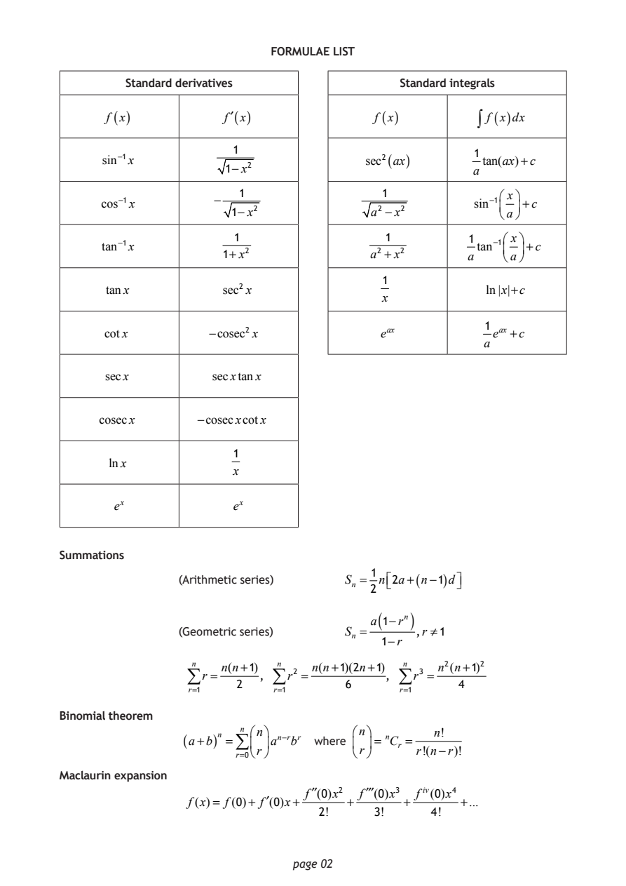
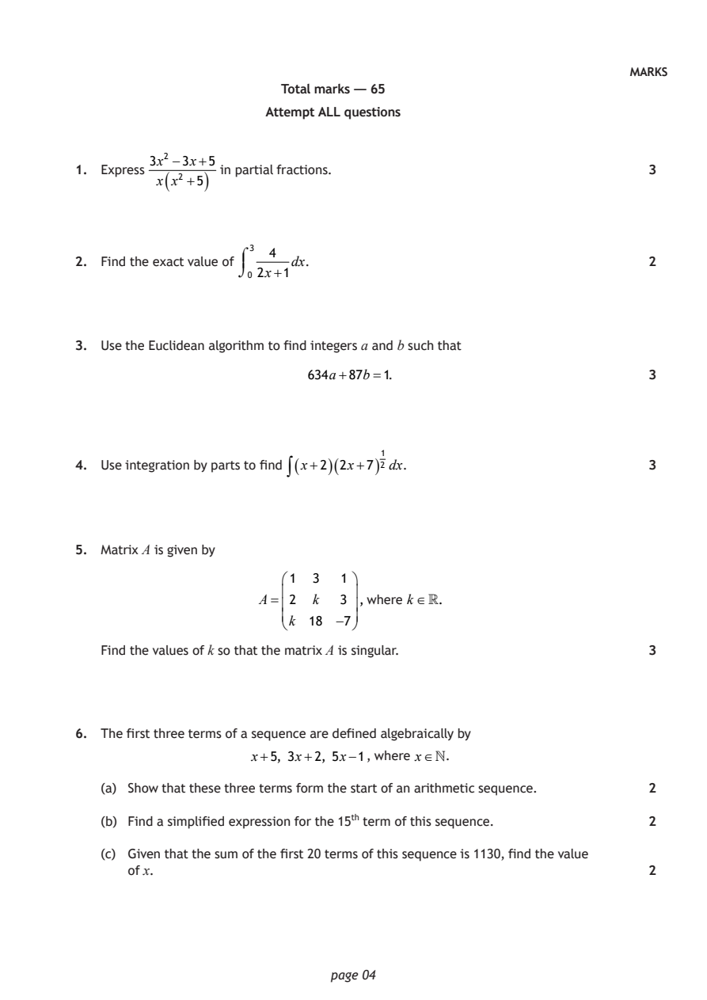
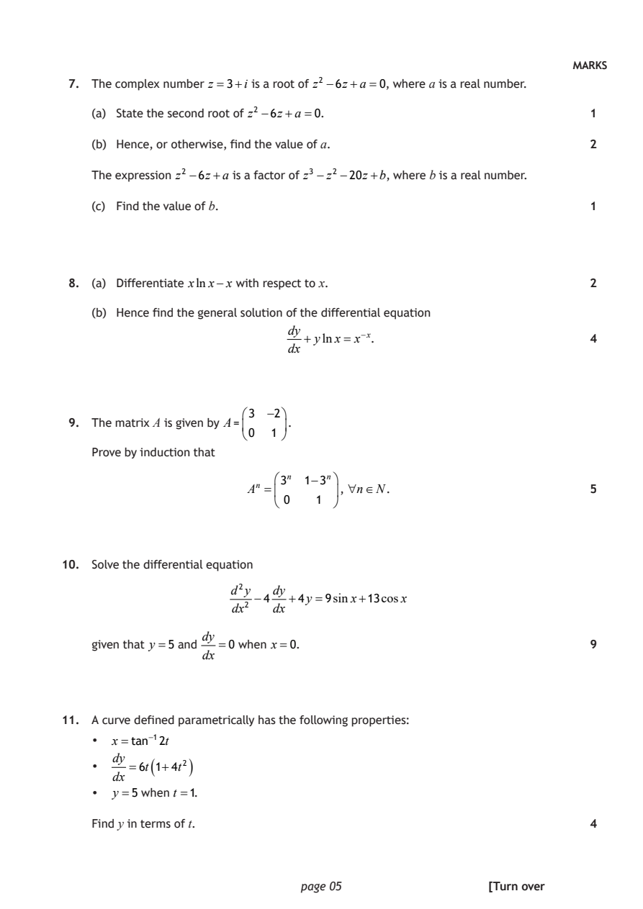
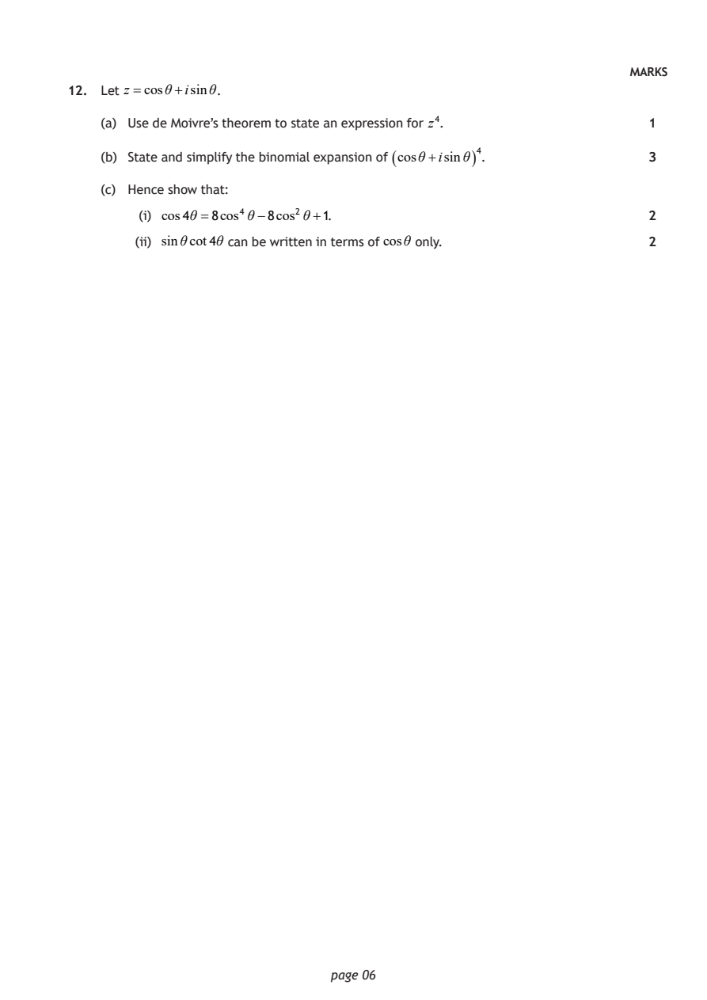
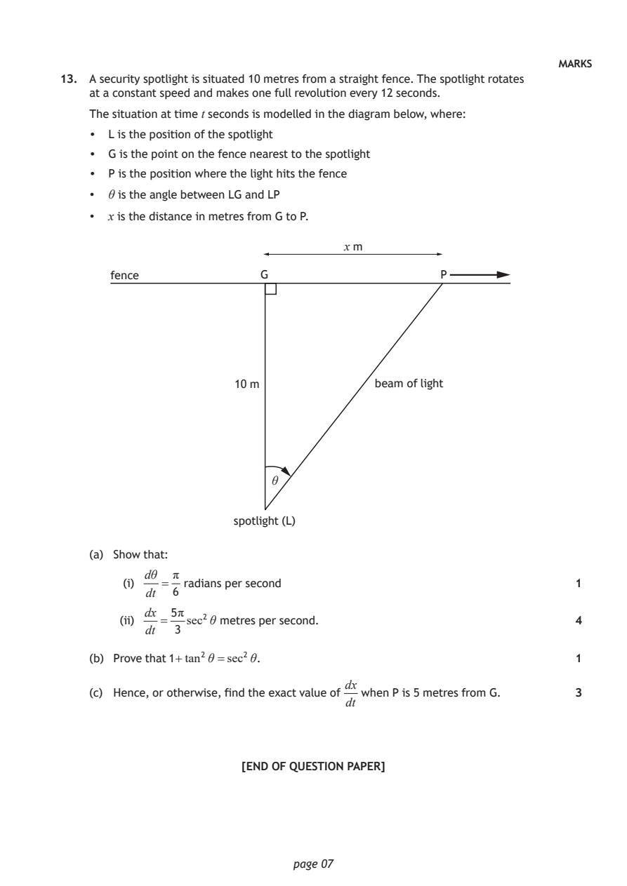

2022 Advanced Higher Mathematics - Paper 2 questions
Source: Scottish Qualifications Authority (SQA) / Qualifications Scotland. This is a StemInteract HTML companion, not an official HTML edition. Selectable text is supplied alongside original page images. Use the images or original PDF for equations, powers, fractions, vector notation, tables and diagrams; text extraction cannot fully preserve mathematical layout.
Jump to a question
PDF page 1

Selectable page text
AH
National
Qualications
2022 MODIFIED
X847/77/12 Mathematics
Paper 2
FRIDAY, 6 MAY
10:30 AM – 12:30 PM
Total marks — 65
Attempt ALL questions.
You may use a calculator.
To earn full marks you must show your working in your answers.
State the units for your answer where appropriate.
You will not earn marks for answers obtained by readings from scale drawings.
Write your answers clearly in the spaces provided in the answer booklet. The size of the space
provided for an answer is not an indication of how much to write. You do not need to use all the
space.
Additional space for answers is provided at the end of the answer booklet. If you use this space
you must clearly identify the question number you are attempting.
Use blue or black ink.
Before leaving the examination room you must give your answer booklet to the Invigilator; if you
do not, you may lose all the marks for this paper.
©
*X8477712*
A/SAPDF page 2

Selectable page text
FORMULAE LIST
Standard derivatives Standard integrals
f (x) f′(x) f (x) ∫ f (x)dx
1
1
sin⁻¹x sec²(ax) tan(ax)+c
1−x² a
1 1 ⎛ x⎞
cos⁻¹x
−
sin⁻¹⎜ ⎟+c
1−x² a² −x² ⎝a⎠
1 1 1 ⎛ x⎞
tan⁻¹x tan⁻¹⎜ ⎟+c
1+x² a² +x² a ⎝a⎠
1
tanx sec² x ln|x|+c
x
1
cotx −cosec²x e^{a}^{x} e^{a}^{x} +c
a
secx secxtanx
cosecx −cosecxcotx
1
lnx
x
e^{x} e^{x}
Summations
1
(Arithmetic series) Sₙ = n⎡2a+(n−1)d⎤
⎣ ⎦
2
( )
a 1−rⁿ
(Geometric series) Sₙ = ,r ≠1
1−r
n n(n+1) n n(n+1)(2n+1) n n²(n+1)²
∑r = , ∑r² = , ∑r³ =
2 6 4
r=1 r=1 r=1
Binomial theorem
n ⎛n⎞ ⎛n⎞ ₙ n!
(a+b)ⁿ =∑ ⎜ ⎟aⁿ⁻^{r}b^{r} where ⎜ ⎟= Cᵣ =
⎝r⎠ ⎝r⎠ r!(n−r)!
r=0
Maclaurin expansion
f′′(0)x² f′′′(0)x³ fⁱ^{v}(0)x⁴
f(x)= f(0)+ f′(0)x+ + + +...
2! 3! 4!
page 02PDF page 3

Selectable page text
FORMULAE LIST (continued)
De Moivre’s theorem
[r(cosθ+isinθ)]ⁿ =rⁿ(cosnθ+isinnθ)
Vector product
a×b= a bsinθnˆ
i j k
a₂ a₃ a₁ a₃ a₁ a₂
= a₁ a₂ a₃ =i −j +k
b₂ b₃ b₁ b₃ b₁ b₂
b₁ b₂ b₃
Matrix transformation
⎛cosθ −sinθ⎞
Anti-clockwise rotation through an angle, θ, about the origin, ⎜ ⎟
⎝sinθ cosθ ⎠
[Turn over
page 03PDF page 4
Paper 2, Question 1Paper 2, Question 2Paper 2, Question 3Paper 2, Question 4Paper 2, Question 5Paper 2, Question 6
Selectable page text
MARKS
Total marks — 65
Attempt ALL questions
3x² −3x+5
1. Express in partial fractions. 3
( )
x x² +5
4
2. Find the exact value of ³ dx. 2
2x+1
0
3. Use the Euclidean algorithm to find integers a and b such that
634a+87b=1. 3
4. Use integration by parts to find ∫(x+2)(2x+7)²¹ dx. 3
5. Matrix A is given by
1 3 1
A= 2 k 3 , where k.
k 18 −7
Find the values of k so that the matrix A is singular. 3
6. The first three terms of a sequence are defined algebraically by
x+5, 3x+2, 5x−1 , where x∞.
(a) Show that these three terms form the start of an arithmetic sequence. 2
(b) Find a simplified expression for the 15^{t}^{h} term of this sequence. 2
(c) Given that the sum of the first 20 terms of this sequence is 1130, find the value
of x. 2
page 04PDF page 5
Paper 2, Question 7Paper 2, Question 8Paper 2, Question 9Paper 2, Question 10Paper 2, Question 11
Selectable page text
MARKS
7. The complex number z =3+i is a root of z² −6z+a =0, where a is a real number.
(a) State the second root of z² −6z+a =0. 1
(b) Hence, or otherwise, find the value of a. 2
The expression z² −6z+a is a factor of z³ −z² −20z+b, where b is a real number.
(c) Find the value of b. 1
8. (a) Differentiate xlnx−x with respect to x. 2
(b) Hence find the general solution of the differential equation
dy
+ ylnx= x⁻^{x}. 4
dx
3 −2
9. The matrix A is given by A = .
0 1
Prove by induction that
3ⁿ 1−3ⁿ
Aⁿ = , nN. 5
0 1
10. Solve the differential equation
d²y dy
−4 +4y =9sinx+13cosx
dx² dx
dy
given that y =5 and =0 when x=0. 9
dx
11. A curve defined parametrically has the following properties:
• x=tan⁻¹2t
dy
( )
• =6t 1+4t²
dx
• y =5 when t =1.
Find y in terms of t. 4
page 05 [Turn overPDF page 6
Paper 2, Question 12
Selectable page text
MARKS
12. Let z =cosθ+isinθ.
(a) Use de Moivre’s theorem to state an expression for z⁴. 1
(b) State and simplify the binomial expansion of ( cosθ+isinθ ) ⁴. 3
(c) Hence show that:
(i) cos4θ =8cos⁴θ−8cos²θ+1. 2
(ii) sinθcot4θ can be written in terms of cosθ only. 2
page 06PDF page 7
Paper 2, Question 13
Selectable page text
MARKS
13. A security spotlight is situated 10 metres from a straight fence. The spotlight rotates
at a constant speed and makes one full revolution every 12 seconds.
The situation at time t seconds is modelled in the diagram below, where:
• L is the position of the spotlight
• G is the point on the fence nearest to the spotlight
• P is the position where the light hits the fence
• θ is the angle between LG and LP
• x is the distance in metres from G to P.
x m
fence G P
10 m beam of light
θ
spotlight (L)
(a) Show that:
dθ π
(i) = radians per second 1
dt 6
dx 5π
(ii) = sec²θ metres per second. 4
dt 3
(b) Prove that 1+tan²θ =sec²θ. 1
dx
(c) Hence, or otherwise, find the exact value of when P is 5 metres from G. 3
dt
[END OF QUESTION PAPER]
page 07PDF page 8

Selectable page text
[BLANK PAGE]
DO NOT WRITE ON THIS PAGE
page 08